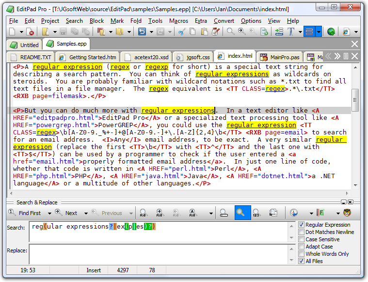

EditPad Pro is one of the most convenient text editors available on the Microsoft Windows platform. You can use EditPad Pro all day long without it getting into the way of what you are trying to do. When you use search & replace and the spell checker functionality, for example, you do not get a nasty popup window blocking your view of the document you are working on, but a small, extra pane just below the text. If you often work with many files at the same time, you will save time with the tabbed interface and the Project functionality for opening and saving sets of related files.
(continued below screen shot)

EditPad Pro doesn't use a limited and outdated regular expression engine like so many other text editors do. EditPad Pro uses the same full-featured regular expression engine used by PowerGREP and RegexBuddy. EditPad Pro's regex flavor is fully compatible with the flavors used by Perl, Java, .NET and many other modern Perl-style regular expression flavors. All regex operators explained in the tutorial on this website are available in EditPad Pro.
EditPad Pro integrates with RegexBuddy. You can instantly fire up RegexBuddy to edit the regex you want to use in EditPad Pro, or select one from a RegexBuddy library.
Pressing Ctrl+F in EditPad Pro will make the search and replace pane appear. Mark the box labeled "regular expressions" to enable regex mode. Type in the regex you want to search for, and hit the Find First or Find Next button. EditPad Pro will then highlight search match. If the search pane takes up too much space, simply close it after entering the regular expression. Press Ctrl+F3 to find the first match, or F3 to find the next one.
When there are no further regex matches, EditPad Pro doesn't interrupt you with a popup message that you have to OK. The text cursor and selection will simply stay where they were, and the find button that you clicked will flash briefly. This may seem a little subtle at first, but you'll quickly appreciate EditPad Pro staying out of your way and keeping you productive.
Replacing text is just as easy. First, type the replacement text, using backreferences if you want, in the Replace box. Search for the match you want to replace as above. To replace the current match, click the Replace button. To replace it and immediately search for the next match, click the Replace Next button. Or, click Replace All to get it over with.
Like many modern text editors, EditPad Pro supports syntax coloring or syntax highlighting for various popular file formats and programming languages. What makes EditPad Pro unique, is that you can use regular expressions to define your own syntax coloring schemes for file types not supported by default.
To create your own coloring scheme, all you need to do is download the custom syntax coloring schemes editor (only available if you have purchased EditPad Pro), and use regular expressions to specify the different syntactic elements of the file format or programming language you want to support. The regex engine used by the syntax coloring is identical to the one used by EditPad Pro's search and replace feature, so everything you learned in the tutorial on this website applies. Syntax coloring schemes can be shared on the EditPad Pro website.
The advantage is that you do not need to learn yet another scripting language or use a specific development tool to create your own syntax coloring schemes for EditPad Pro. All you need is decent knowledge of regular expressions.
Text editors catering to programmers often allow you to fold certain sections in source code files to get a better overview. Another common feature is a sidebar showing you the file's structure, enabling you to quickly jump to a particular class definition or method implementation.
EditPad Pro also offers both these features, with one key difference. Most text editors only support folding and navigation for a limited set of file types, usually the more popular programming languages. If you use a less common language or file format, not to mention a custom one, you're out of luck.
EditPad Pro, however, implements folding and navigation using file navigation schemes. A bunch of them are included with EditPad Pro. These schemes are fully editable, and you can even create your own. Many file navigation schemes have been shared by other EditPad Pro users.
You can create and edit this schemes with a special file navigation scheme editor, which you can download after buying EditPad Pro. Like the syntax coloring schemes, file navigation schemes are based entirely on regular expressions. Because file navigation schemes are extremely flexible, editing them will take some effort. But with a bit of practice, you can make EditPad Pro's code folding and file navigation to work just the way you want it, and support all the file types that you work with, even proprietary ones.
EditPad Pro works under Windows XP, Vista, 7, and 8. For more information on EditPad Pro, please visit www.editpadpro.com. Incidentally, this website was entirely created using EditPad Pro, except for the graphics.
Did this website just save you a trip to the bookstore? Please make a donation to support this site, and you'll get a lifetime of advertisement-free access to this site!
Page URL: http://www.Regular-Expressions.info/editpadpro.html
Page last updated: 18 April 2013
Site last updated: 17 June 2013
Copyright © 2003-2013 Jan Goyvaerts. All rights reserved.
| Regex Tools |
| grep |
| PowerGREP |
| RegexBuddy |
| RegexMagic |
| General Applications |
| EditPad Pro |
| Languages & Libraries |
| Delphi |
| GNU (Linux) |
| Groovy |
| Java |
| JavaScript |
| .NET |
| PCRE (C/C++) |
| Perl |
| PHP |
| POSIX |
| PowerShell |
| Python |
| R |
| REALbasic |
| Ruby |
| Tcl |
| VBScript |
| Visual Basic 6 |
| wxWidgets |
| XML Schema |
| XQuery & XPath |
| Databases |
| MySQL |
| Oracle |
| PostgreSQL |
| More Information |
| Introduction |
| Quick Start |
| Tutorial |
| Tools and Languages |
| Examples |
| Books |
| Reference |
| Print PDF |
| About This Site |
| RSS Feed & Blog |
| PowerGREP 4 |
| Use regular expressions to search through large numbers of text and binary files. Quickly find the files you are looking for, or extract the information you need. Look through just a handful of files or folders, or scan entire drives and network shares. |
| Search and replace using text, binary data or one or more regular expressions to automate repetitive editing tasks. Preview replacements before modifying files, and stay safe with flexible backup and undo options. |
| Use regular expressions to rename files, copy files, or merge and split the contents of files. Work with plain text files, Unicode files, binary files, compressed files, and files in proprietary formats such as MS Office, OpenOffice, and PDF. Runs on Windows 2000, XP, Vista, 7, and 8. |
| More information |
| Download PowerGREP now |